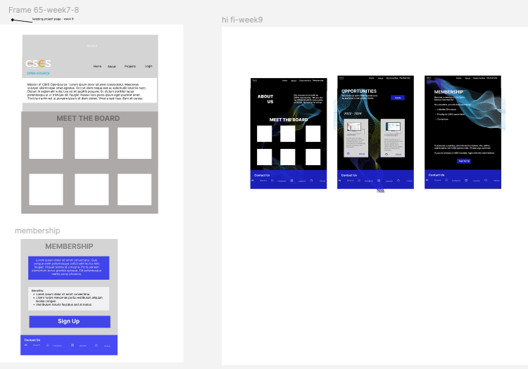

Technical Art
-
The Great Mouse Adventures
Programmed in Unity, I researched MIDI parser plugins and implemented player health system including damage SFX, damage behavior, and health icons. Play this 3D classical music rhythm game here!
-
SoulHaven
After performing competitve research of similar cozy, incremental games, I created button animations such as a shine effect with a customized C# shader and a squish-and-squeeze effect in the Unity Engine. Play SoulHaven!
-
mRNAdventure
An educational game about how mRNA vaccines are created. I was in charge of hand-drawing and coloring 2D environment backgrounds and playable puzzle assets while producing sound effects and music. I'm planning to release a mobile update of the game with improved puzzle prompts and button prompts for a more seemless player experience. Play mRNAdventure (no blood involved)!
-
Cognitive Cities

I was an Unreal Engine 5 (UE5) Modeling intern for the Cognitive Cities research project at the Qualcomm Institute (QI) at UC San Diego! I was tasked with ideating ways to make modeling in UE5 more accessible and understandable for non-technical users. In addition, I also created my own project centered around green energy, in which I utilized UE5 to identify where UCSD should implement solar panels to cut down electricity costs. Learn more here.
-
CSES Open-Source Website Design
I worked on a small design team to utilize Figma and designed the preliminary web flow, look, and feel of the Open Source division of the Computer Science and Engineering Society (CSES) at UC San Diego. I conducted customer research and usability tests which I incorporated into my low fidelity and high fidelity designs. View my full design process.